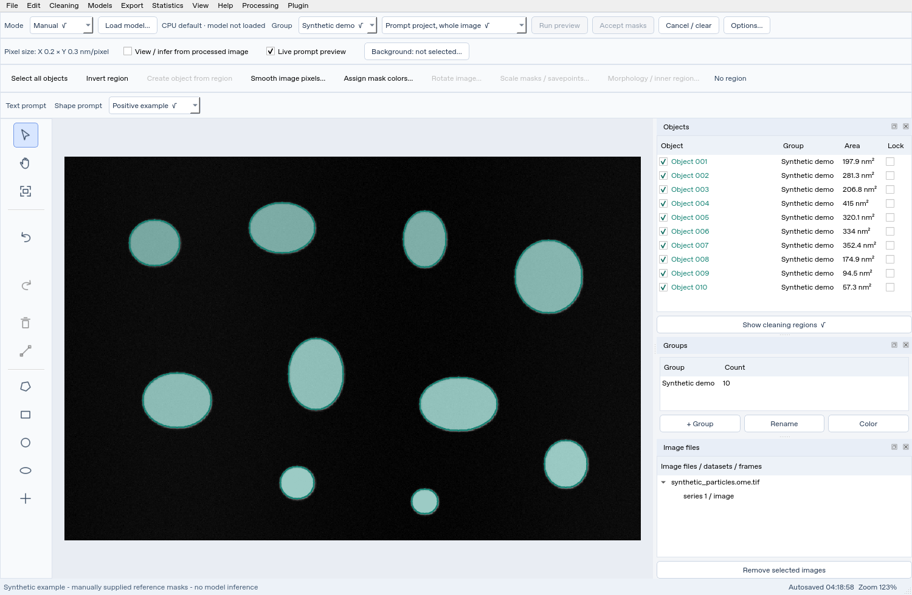

Microscopy · Segmentation · Image restoration
SAM Image Studio#
Annotate microscopy images, find particles with Segment Anything, restore image pixels, and turn reviewed masks into calibrated measurements. A desktop workflow with editable projects and reversible changes.
Learn in this order#
Download/extract or clone the complete project first. Then choose CPU or a dedicated Anaconda GPU environment and learn how to update without uninstalling.
Explore annotation, segmentation, cleaning, denoising, retained crops, calibration, statistics, and export, with a practical example for each.
Find the purpose of every core menu, toolbar control, mode, and workspace panel. Keep the full manuals and parameter reference close at hand.


Synthetic demo with manually supplied reference masks; this illustrates the workspace and is not a SAM3.1 inference result.
Illustrated workflow guides#
Follow the interface from the workspace and menus to the relevant controls.
Data cleaning: choose a target, compare fill methods, preview, apply and restore original pixels.
Three prompted Seg scopes: ROI only, whole-image examples and a single native object; automatic grid is explained separately.
Compressed sensing: dialog order, DCT/TV parameter suggestions and computed synthetic comparisons.
SAM3 ONNX: public text weights without HF login, aliases and exact application ROI clipping.
A practical guide to SAM3.1#
Start with black dots, run a preview, and accept only the masks you want.
Add positive and negative shape examples to describe a visual concept, use a
region to constrain the output, and give useful prompts memorable aliases.
The guides explain what the application adds and what the underlying model
actually receives.
Step-by-step SAM3.1 recipes, combined prompts, point behavior, checkpoint selection, acceptance, and troubleshooting.
Understand native SAM1/2 masks, Grounding DINO → SAM2 text detection, SAM3/3.1 concept segmentation, and whole-image exemplar retrieval.
What the application adds#
SAM Image Studio wraps the models in a microscopy workflow: exact ROI output limits, inverse-region selection, project-level text aliases, multiple positive and negative examples, review-before-accept, protected annotations, native autosave, calibrated measurements, and reversible processing. Read the application additions guide to understand their scope and limitations.
Version 1.4.3, based on the v1.4 application line. The optional SAM3/3.1 backend requires NVIDIA CUDA, a dedicated Linux/WSL2 Conda environment, and approved compatible weights. CPU supports SAM1, SAM2/2.1 and public SAM3 ONNX text segmentation. This website documents implementation and recorded checks; it does not claim new CUDA benchmarks or microscopy detection accuracy.